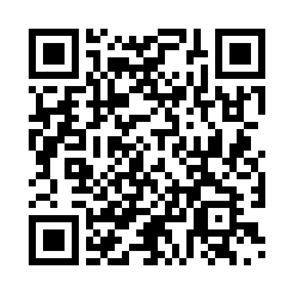
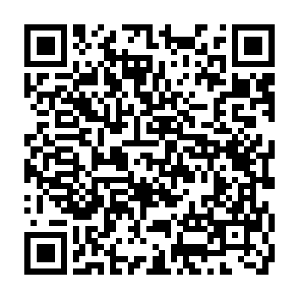
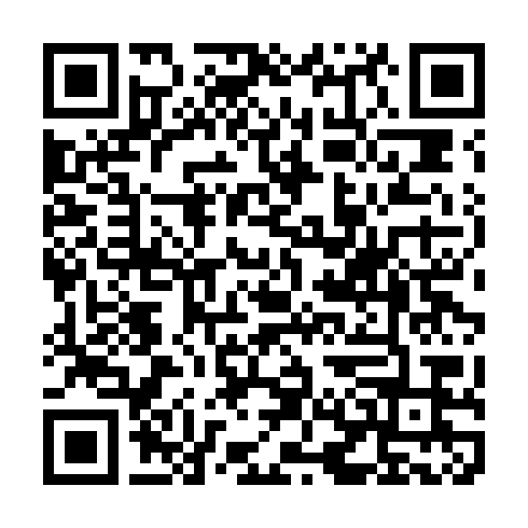
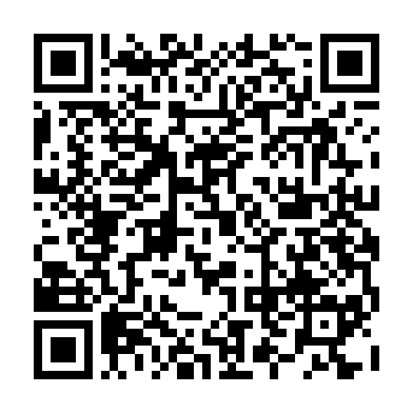
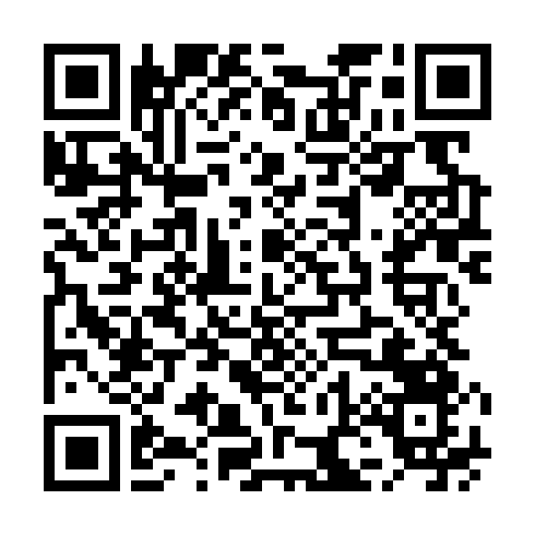
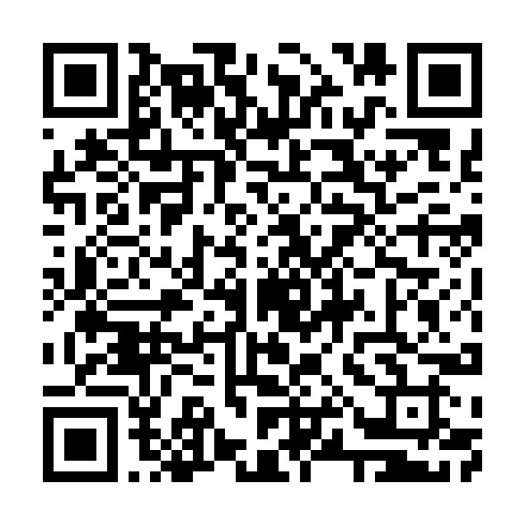
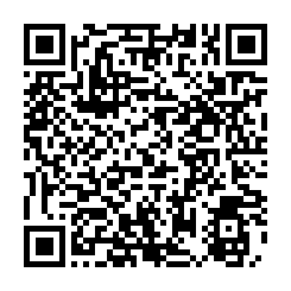
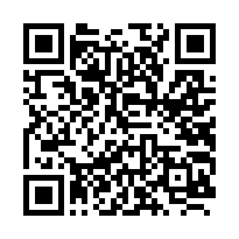

Support de cours
Cours, activités, cas et corrections progressives.

Ouvrir la ressourceTélécharger le QR codeSur votre téléphone, touchez « Ouvrir la ressource ». Depuis un écran projeté, scannez le QR code correspondant à la consigne du formateur.
Cours, activités, cas et corrections progressives.

Ouvrir la ressourceTélécharger le QR codeVotre parcours et votre projet professionnel.

Ouvrir la ressourceTélécharger le QR codeBesoins et ressources - 15 minutes.

Ouvrir la ressourceTélécharger le QR codeAffecter et adapter - 20 minutes.

Ouvrir la ressourceTélécharger le QR codeConsultez votre groupe et la répartition des rôles. Lecture seule.

Ouvrir la ressourceTélécharger le QR codePDF : repérez les deux pages de votre groupe.

Ouvrir la ressourceTélécharger le QR codePDF de secours : accueil, évaluations, vidéo et bilan.

Ouvrir la ressourceTélécharger le QR code
Ce code ouvre cette page et donne accès aux sept ressources.
Télécharger le QR code général